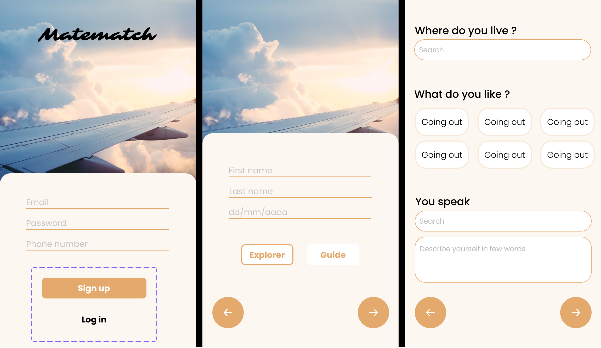
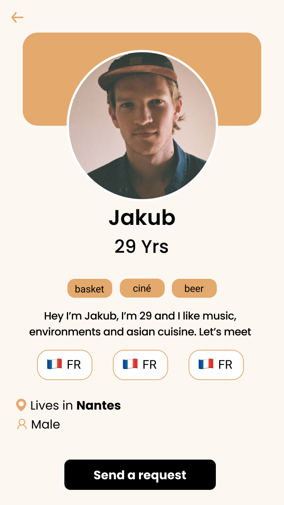
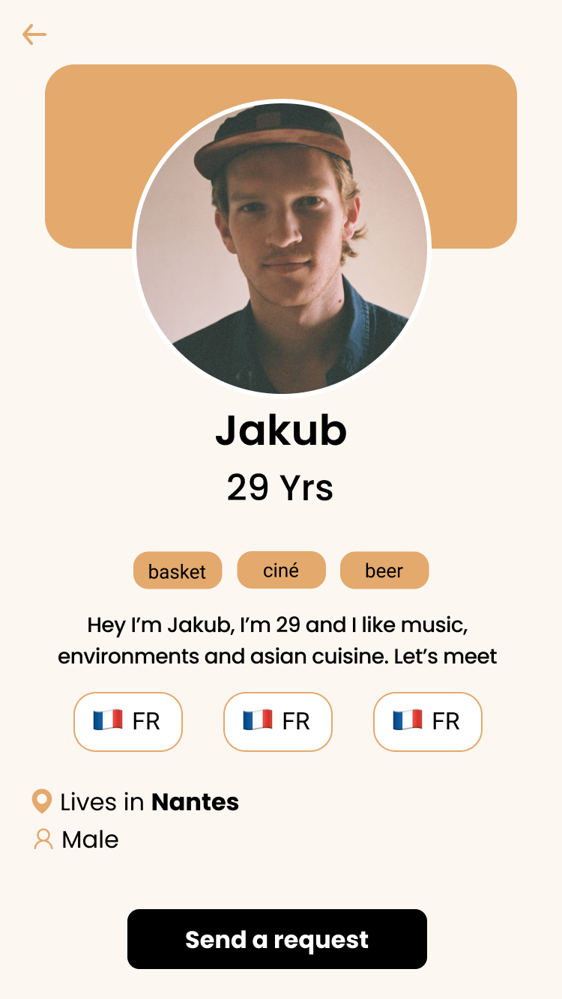

Tanguy
DELEAGE
Matematch
Progressive Web App helping international student in Nantes, who wants to discover the surroundings and the culture, thanks to unique experiences with locals. Matematch allows them to meet the perfect guide.
Challenge
In only 10 days, with a team of 3, we must think, design and develop our very first Progressive Web App (a mobile application accessible from the web).
The problem
Every year a lot of young internationals arrive in Nantes for their studies. Due to a lack of informations and opportunities a lot of them miss the chance to meet French people, practice the language or discover the local areas. They need a simpkle way to connect to French people
Discovery
In order to meet my potential future users, I wanted to meet them and understand their needs. Thanks to a previous work in a student association for Erasmus student and to my personal relation, I have been able to meet some exchange students during interviews on how they experienced or are experiencing their stay in France. Here's what I learned :
- Even if they want to speak French, when the person is not an english speaker it can become hard to communicate
- It's really hard for thb to join a group of French people
- They would sometimes needs a French buddy to help thb in different tasks
On the other hand, I did some research about Nantes, and it's international culture :
- Nantes host more than 50 000 students each year
- I discovered some events on Facebook named "Café des langues" a place where you meet internationals to talk in another language
- There are some associations in Nantes that allows French students to help internationals
My conclusion were than Nantes is a place where there are a lot of students that would love to meet and help internationals to discover the French culture, but they struggle to meet
In order to solve this problem we choose to create Matematch
Design
We started by creating a user journey that lead us to the creation of our first user flow.
With the user flow, we have been able to build our very first wireframe, that later evolved to a mockup.

 

Development
With the design and the user flow done, we were able to buil our database schema, that will allow us to build our database, a necessary step to build the app. Few days later our simple user flow became a progressive app I was able to use on phone.

Launch
After 10 days, it was the moment to pitch our app.
In front of 80 people, we realised our product pitch. If you were not lucky enough to be there, you can still watch the 2 minutes video.
Impact
Today Matematch is a working Progressive Web App, we are still working on it to add some features before releasing it.
However, this challenge with a great experience that taught us the different steps during the creation of a product, and how to deal wih it as a team and in a short time.
On a personal aspect, it allows me to discover that I want to continue my path in Product Design.